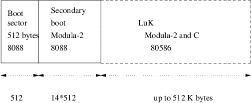

Index
1. How does an operating system boot?
- firstly we need to understand the
minimum details as to how the IBM-PC boots
- secondly we
need to understand the desired final outcome at the end of
the boot phase
- thirdly we can examine a specific
example to better understand the steps taken to achieve the
outcome
2. How does an IBM-PC boot?
- the bios settings dictates the boot
device order
- the bios attempts to load in the first 512
bytes (boot sector) from the various devices in order
-
not all devices may be present: usb memory stick, floppy
disk
- the bios loads in the 512 bytes from the first
found device at 0x7c00
- it sets
register: dl to the device number
- the bios then jumps to location 0x7c00
3. Boot sector code charactistics and functionality
- it remembers the bios boot device
(usb/floppy/harddisk) in a processor register
dl
- it copies itself into a
sensible location (typically out of the way in high memory)
- it reassigns the stack to a consistant location
- it
loads in the secondary boot stage of the operating system (a
sector at a time)
- it may perform very limited checking
as each subsequent sector/track is read from the device into
memory
- finally it jumps to the start of the secondary
code.
4. The language used to implement the bootsector (first)
- the boot sector (
first ) is not normally written in a
high level language as it needs the ability to:
- copy its code segment, reassign the
stack (change the SP and stack
segment registers)
- the ability to jump to a physical
location and it must fit in 512 bytes
5. Final desired outcome after all the boot phases are complete
6. Example: LuK booting
- LuK consists of a collection of
modules
- the microkernel only links the modules actually
required at runtime
- the mixture of the modules required
for different targets and applications may be different
7. Linker
- uses the file
init to generate a list of modules
and generates an ELF 32 bit
x86 executable which contains data,
code and symbol information
- for
example we will name this, application
.third
8. Boot phases
- in the build directory you would see
9. first
- first is a
tiny model 8086 executable, written in assembly language
- see luk-1.0.3/boot/BAS/boot.S
- watch out as the assembler uses:
mov dest, src
- its total
size (data + code) must not exceed 512 bytes
- its duty
is threefold
- pretend to be a fat12
file system!
- move itself to a sane location
- load
in second
10. second
- is written in Modula-2, which is
compiled and linked into a tiny model 8086 executable
-
tiny model
- sets all segment registers
to the same value
- total size of data + code + stack
must not exceed 64K
- in fact due to legacy booting
via the floppy disk it cannot be more than 7K
- its duty
is to load in the application
.third
- set up protected mode
and move from tiny model into 32 bits
- pass various
system parameters into application
.third
- such as
memory size, video memory start
- finally jump to
the start of application
.third
11. Goal of the overall boot procedure
-

- notice that no tiny model
code will exist in the end
- all code is 32 bit and
belongs to the core microkernel
-
first and
second will be overwritten
12. Overview of the boot stages
- three boot phases
- first boot stage (boot sector,
1 sector, assembly language)
- second boot stage
(up to 14 sectors 8088 small mode Modula-2)
- LuK
(up to 512K of 32 bit code, Modula-2
and C)
-

13. LuK boot first
- (program
first )
- 512 bytes boot sector
is small! Just enough space to place an assembly language
program which loads in a larger program
- loads in secondary boot stage
at 0x90200
- jumps to 0x90200
- secondary
boot stage (program second )
- consists of limited amounts of
assembly language
- most of the code is written in
Modula-2 but compiled to small mode 8088
- the secondary
stage may be up to 14 sectors in size (14 * 512 bytes)
14. Secondary boot stage
- purpose of secondary boot
stage is to load in your application
.third code as quickly as possible
- it uses whole track reads whenever
possible (fast)
- the primary boot stage only used
single sector loads (slow)
- it loads in the LuK
32 bit executable
(application .third ) into
location 0x10000
- collects vital statistics about the PC
(how much memory the PC contains and where video memory
starts)
- saves this information
- turns the floppy
disk motor off
- finally second puts the
microprocessor into 32 bit mode and calls application
.third
15. Boot phase in more detail
- how do you put
LuK in the right place?
- start
with the final position you desire
- and
consider how you can achieve it
- draw memory maps of the
different LuK bootstage intermediate
positions
16. Final memory map for LuK
17. Second memory map for LuK
18. Boot memory map for LuK
19. Conclusion
- this technique works
- it is not
the most efficient, it might be possible to make
first perform the actions of
second
- however the approach
presented here allows us to:
- execute
high level language code sooner
- some of the older
limits should be removed now that booting floppy disks is no
longer needed
- maybe it would be sensible to move LuK to
start at 1MB upwards
- would allow LuK
to expand
Index
1. How does an operating system boot?
2. How does an IBM-PC boot?
3. Boot sector code charactistics and functionality
4. The language used to implement the bootsector (first)
5. Final desired outcome after all the boot phases are complete
6. Example: LuK booting
7. Linker
8. Boot phases
9. first
10. second
11. Goal of the overall boot procedure
12. Overview of the boot stages
13. LuK boot first
14. Secondary boot stage
15. Boot phase in more detail
16. Final memory map for LuK
17. Second memory map for LuK
18. Boot memory map for LuK
19. Conclusion
Index
This document was produced using
groff-1.22.